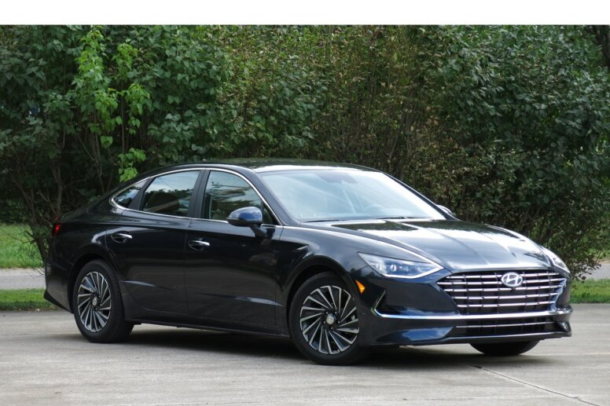
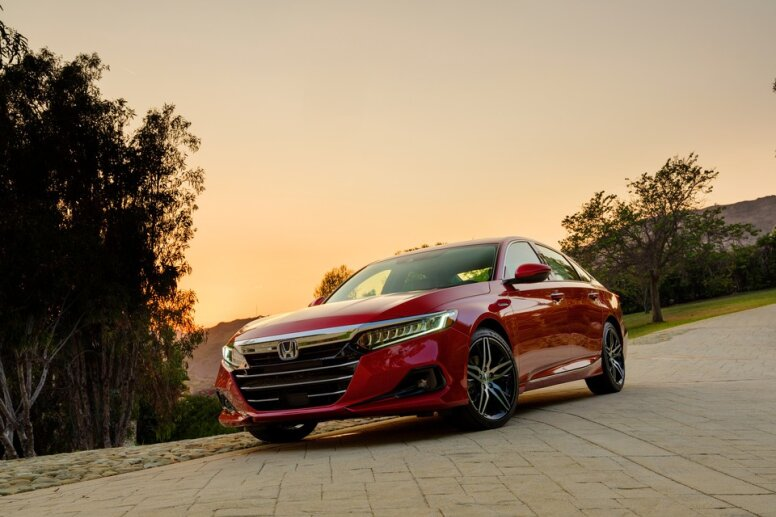
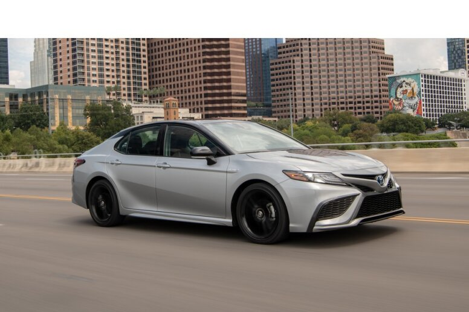
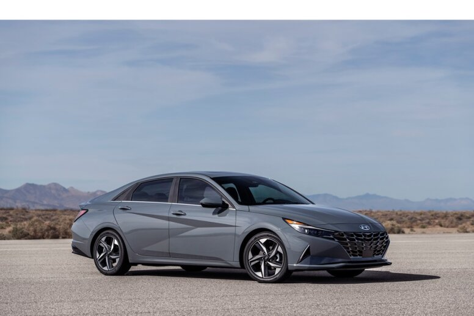
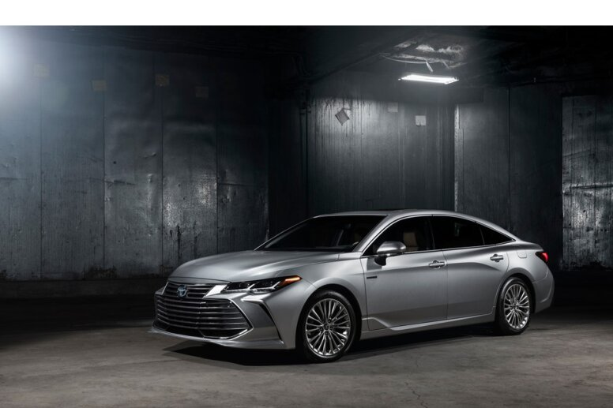
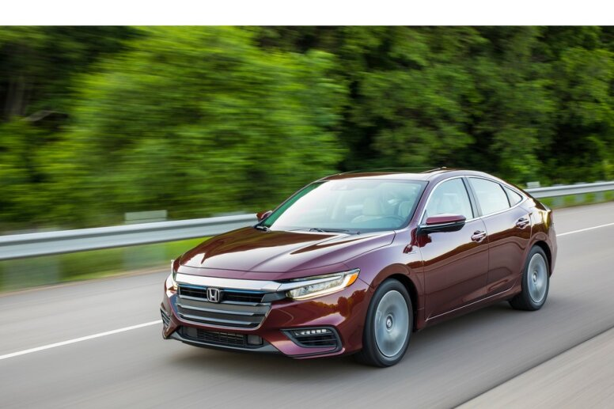
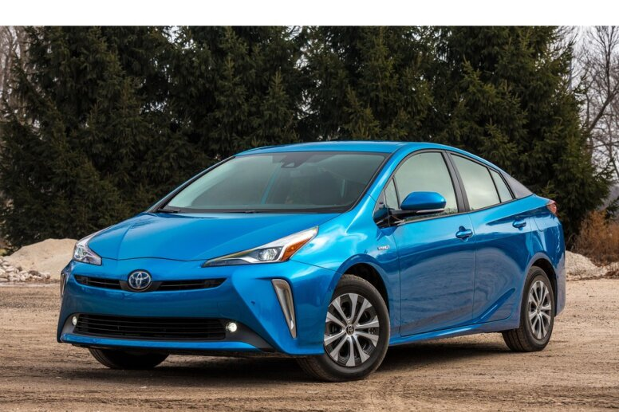
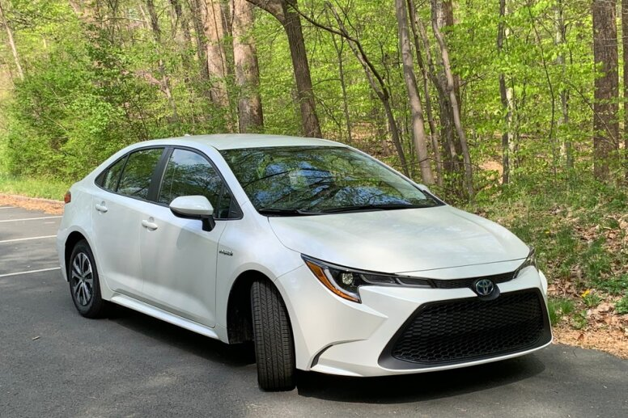
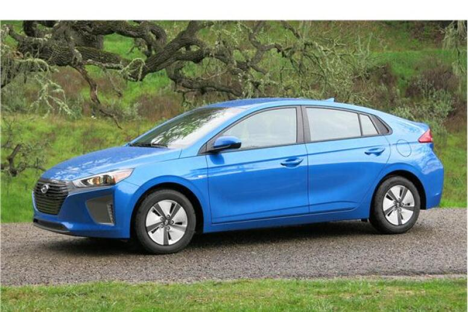

Home
Learn It
Types
Top Hybrids
Contact
Home
Learn It
Types
Top Hybrids
Contact
|  |
#1. 2022 Hyundai Sonata HybridThe 2022 Hyundai Sonata Hybrid places near the top of the hybrid car segment. It has a roomy and refined interior, user-friendly technology and agreeable performance.Exterior Images Interior Images Read More... |
SCORE 8.8 MSRP $27,200 - $35,550 MPG 45-50 City / 51‑54 Hwy Performance 7.6/10 |
|  |
#2. 2022 Honda Accord HybridEngaging handling and a roomy, high-class interior help catapult the 2022 Honda Accord Hybrid toward the top of our hybrid car rankings.Exterior Images Interior Images Read More... |
SCORE 8.7 MSRP $27,320 - $37,190 MPG 44-48 City / 41-48 Hwy Performance 7.6/10 |
|  |
#3. 2022 Toyota Camry HybridAn energetic powertrain, a comfortable ride, and a feature-filled cabin help the 2022 Toyota Camry Hybrid place near the top of our hybrid car rankings.Exterior Images Interior Images Read More... |
SCORE 8.7 MSRP $27,480 - $2,920 MPG 44-51 City / 47-53 Hwy Performance 7.6/10 |
|  |
#4. 2022 Hyundai Elantra HybridOutstanding fuel economy, a lively powertrain, and a spacious cabin help the 2022 Hyundai Elantra Hybrid climb toward the top of our hybrid car rankings.Exterior Images Interior Images Read More... |
SCORE 8.7 MSRP $27,480 - $32,920 MPG 49-53 City / 52-56 Hwy Performance 7.6/10 |
|  |
#5. 2022 Toyota Avalon HybridThe 2022 Toyota Avalon Hybrid’s comfortable ride and roomy seating help it rank in the top third of the hybrid car class.Exterior Images Interior Images Read More... |
SCORE 8.5 MSRP $37,350 - $43,650 MPG N/A City / N/A Hwy Performance 7.6/10 |
|  |
#6. 2022 Honda InsightPhenomenal fuel efficiency and intuitive features help the 2022 Honda Insight reach the top half of our hybrid car rankings, but a noisy engine and pinched headroom hold it back.Exterior Images Interior Images Read More... |
SCORE 8.4 MSRP $25,760 - $29,790 MPG 51-55 City / 45-49 Hwy Performance 8.6/10 |
|  |
#7. 2022 Toyota PriusThe 2022 Toyota Prius delivers phenomenal fuel economy and offers up a lot of passenger and cargo space, but it falls to the bottom half of the hybrid car class because of a weak powertrain and so-so interior quality.Exterior Images Interior Images Read More... |
SCORE 7.8 MSRP $25,760 - $29,790 MPG 51-58 City / 47-53 Hwy Performance 7.9/10 |
|  |
#8. 2022 Toyota Corolla HybridThe 2022 Toyota Corolla Hybrid sits in the lower half of our hybrid car rankings. Its fuel economy estimates are among the best in the class, and its cabin is packed with features, but it’s held back in part by its below-average trunk capacity and limited rear-seat headroom.Exterior Images Interior Images Read More... |
SCORE 7.7 MSRP $23,750 MPG 53 City / 52 Hwy Performance 7.8/10 |
|  |
#9. 2022 Hyundai IoniqThe 2022 Hyundai Ioniq offers terrific fuel economy, lots of standard safety features, a user-friendly infotainment system, and a low starting price, but it suffers from tepid acceleration, a jittery ride, and a snug back seat. This vehicle does not have an overall score or ranking because it hasn't been rated for reliability.Exterior Images Interior Images Read More... |
SCORE Not Yet Ranked MSRP $23,600 - $33,250 MPG N/A Electric / N/A Gas Performance 8.1/10 |